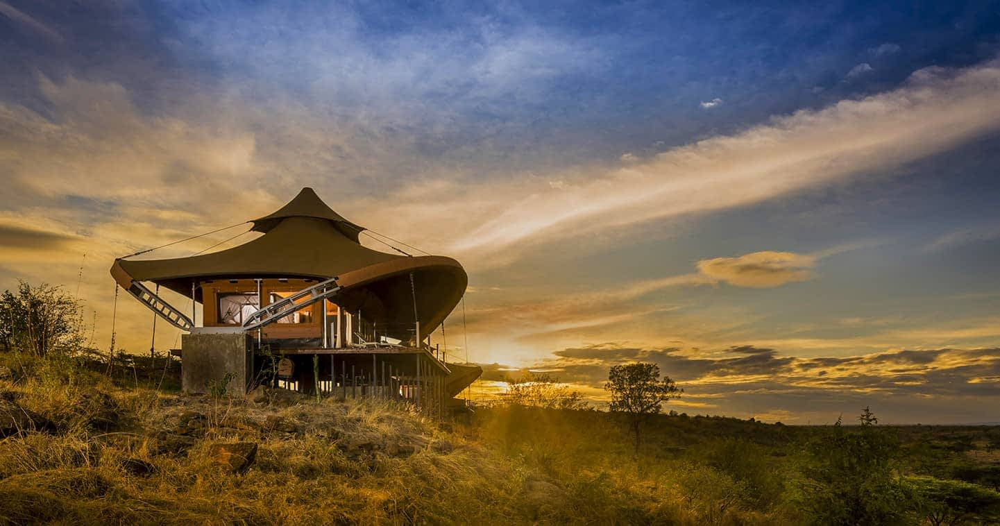
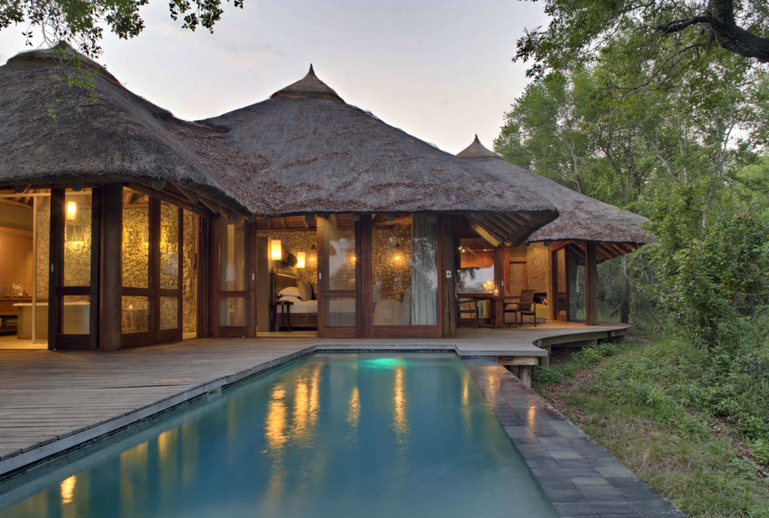
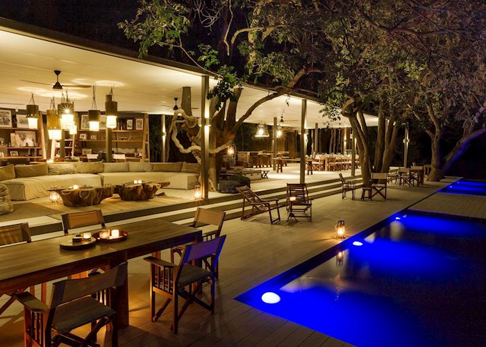
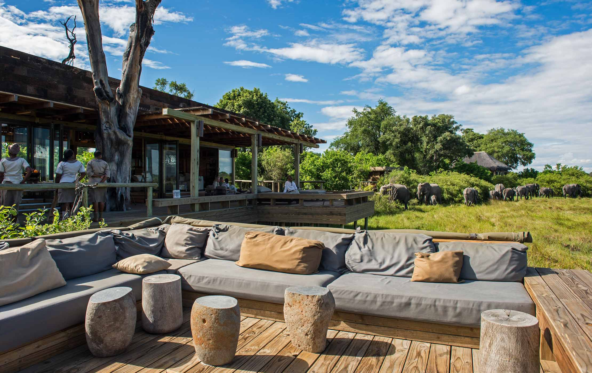
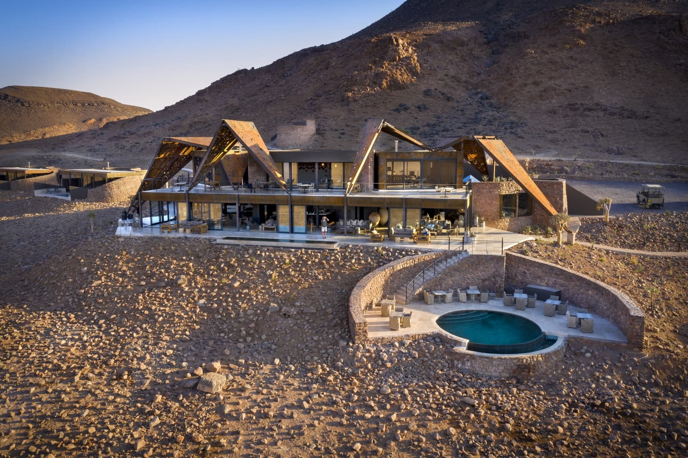
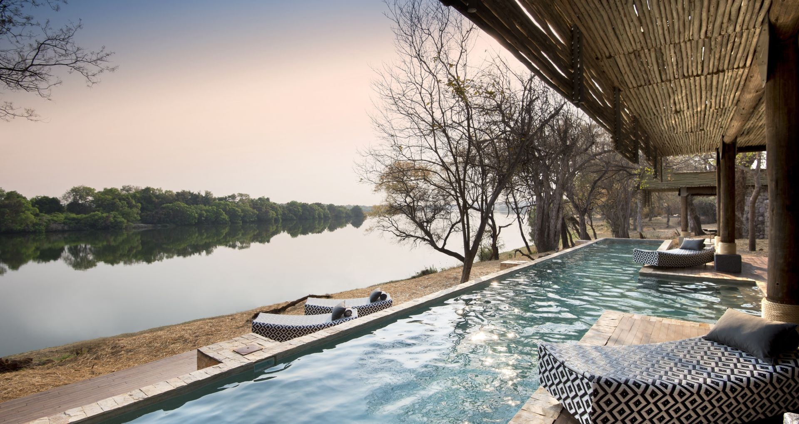

Africa’s Top 10 Luxury Safari Lodges: An Unforgettable Experience
1. Singita Grumeti, Tanzania
- Location: Serengeti National Park – Grumeti Reserve
- Best For: Wildlife enthusiasts, photographers, honeymooners, families
Why It’s Special: If you’ve ever dreamt of experiencing the Serengeti’s iconic Great Migration in style, Singita Grumeti is the ultimate destination. The lodge sits on a private concession within the Serengeti, offering exclusive access to a region known for its stunning biodiversity and incredible big cat sightings.
Accommodation: Singita Grumeti features luxurious tents, villas, and suites, all designed to reflect the natural beauty of the Serengeti with floor-to-ceiling windows, private plunge pools, and spacious living areas.

Experience:
- Witness the Great Migration from the comfort of your luxury lodge.
- Go on twice-daily game drives, led by expert guides who ensure you get the best wildlife sightings.
- Try a hot air balloon ride over the Serengeti at sunrise for an unforgettable view of the landscape.
- Enjoy private bush dinners and stargazing under Africa’s vast skies.
Insider Tip: Singita is one of the most environmentally conscious safari operators, offering guests the chance to connect deeply with nature through conservation-focused activities and community visits.
2. Mahali Mzuri, Kenya
- Location: Maasai Mara National Reserve
- Best For: Great Migration viewing, luxury in the heart of Maasai Mara, exclusive safari experience

Why It’s Special: This ultra-luxury tented camp is part of Sir Richard Branson’s Virgin Limited Edition collection and offers a unique way to experience Kenya’s famed Maasai Mara. With just 12 luxury tents, Mahali Mzuri is an intimate, exclusive experience where you can witness the drama of the Great Migration without the crowds.
Accommodation: Each tent is spacious and beautifully appointed with sweeping views of the Mara plains. Private terraces, plunge pools, and en-suite bathrooms ensure comfort and privacy.
Experience:
- Witness the thrilling Great Migration (June-October), where you can see millions of wildebeest and zebras crossing the Mara River.
- Guided game drives with expert Maasai trackers and guides, ensuring you see the Big Five in their natural habitat.
- Cultural immersion with visits to nearby Maasai villages, learning about the fascinating traditions of this indigenous community.
- Indulge in the camp’s fantastic spa treatments or take a refreshing dip in your private pool.
Insider Tip: If you're traveling during the dry season, opt for an early morning or late afternoon game drive for the best wildlife sightings and to avoid the heat.
3. Dulini Lodge, South Africa
- Location: Sabi Sand Game Reserve, bordering Kruger National Park
- Best for: Big Five sightings, luxury and intimacy, expert-guided safaris

Why It’s Special: Located in one of South Africa’s most iconic game reserves, Dulini Lodge offers a perfect combination of luxury, wildlife, and personalized service. The Sabi Sand Reserve is famous for its high density of leopard, so expect some exceptional wildlife experiences.
Accommodation: Dulini’s intimate luxury suites feature large glass windows, allowing you to watch animals from your bed. Each suite has a private plunge pool, lounge area, and outdoor deck.
Experiences:
- Twice-daily game drives (morning and afternoon) through the reserve, focusing on tracking the Big Five—lions, leopards, rhinos, elephants, and buffalo.
- Walking safaris led by skilled rangers, where you can learn about the smaller aspects of the ecosystem, from plants to insects.
- Spend a day relaxing by the lodge’s pool or enjoying a massage at the spa.
- For photographers, the early morning light in Sabi Sand is magical for capturing Africa’s wildlife.
Insider Tip: Make sure to request a "leopard safari" in Sabi Sand. The reserve is known for its leopard sightings, and expert guides know the perfect spots for photographing these elusive cats.
4. Chinzombo Camp, Zambia
- Location: South Luangwa National Park
- Best For: Walking safaris, authentic safari experiences, off-the-beaten-path adventure

Why It’s Special: For those seeking a truly immersive safari experience, Chinzombo in Zambia’s South Luangwa National Park is perfect. This park is the birthplace of the walking safari, and Chinzombo offers an exclusive and authentic experience, allowing you to connect with the wilderness in a way that few other places offer.
Accommodation: Chinzombo’s six luxury villas are tucked into the trees along the Luangwa River. The tents are spacious, airy, and modern, with open sides to bring the sounds and sights of nature directly to your room.
Experiences:
- Take part in thrilling walking safaris, guided by expert rangers who share their knowledge of the land and animals.
- Game drives that take you into the heart of the park, where you’ll spot giraffes, elephants, lions, and more.
- Enjoy bush breakfasts and dinners by the river, where you can listen to the sounds of the African wilderness.
- Try your hand at fishing along the river, or relax at the camp’s spa.
Insider Tip: The South Luangwa is quieter than other safari regions, so it offers a more private and peaceful experience for guests who want to escape the crowds.
5. Vumbura Plains, Botswana
- Location: Okavango Delta, Moremi Game Reserve
- Best For: Diverse landscapes, water-based safaris, intimate wildlife experiences

Why It’s Special: Vumbura Plains is located in the heart of the Okavango Delta, an extraordinary UNESCO World Heritage site known for its water-based safaris. The camp sits on an island, offering both land and water-based activities, providing guests with an all-encompassing safari experience.
Accommodation: The camp has 7 luxurious tented suites, each with floor-to-ceiling windows, private decks, and plunge pools. The tents are positioned to provide unobstructed views of the delta, making every moment special.
Experiences:
- Explore the Okavango Delta on traditional mokoro (canoe) rides, where you can glide through tranquil channels and watch wildlife up close.
- Enjoy game drives that give you the chance to spot elephants, buffalo, lions, and wild dogs in their natural environment.
- Take a scenic flight over the delta for an aerial view of this vast, water-filled wonderland.
- Experience the unique birdlife, with expert guides who know the best spots for birdwatching.
Insider Tip: If you want to see elephants in the water, visit during the dry season (May to October), when they often come down to drink from the delta’s channels.
6. One&Only Nyungwe House, Rwanda
- Location: Nyungwe Forest National Park
- Best For: Gorilla trekking, chimpanzee tracking, luxury forest retreat

Why It’s Special: One&Only Nyungwe House is a hidden gem in Rwanda’s lush Nyungwe Forest, offering guests a unique opportunity to trek through one of Africa’s last remaining rainforests. The lodge is perfectly positioned for both gorilla trekking in Volcanoes National Park and chimpanzee tracking in Nyungwe, creating a once-in-a-lifetime experience.
Accommodation: The lodge’s 22 luxury rooms and suites overlook the forest, with stunning views that make you feel like you’re immersed in the heart of the rainforest.
Experiences:
- Trek through the rainforest with expert guides to spot chimpanzees and other primates.
- Embark on gorilla trekking expeditions, which are typically held in Volcanoes National Park (a few hours’ drive away).
- Explore the rainforest on guided nature walks, where you can learn about the diverse flora and fauna.
- Enjoy the lodge’s luxurious spa and unwind with a forest-view massage after your adventure.
Insider Tip: Book your gorilla trekking experience well in advance as permits are limited and highly sought after!
7. andBeyond Sossusvlei Desert Lodge, Namibia
- Location: Namib Desert
- Best For: Desert adventures, stargazing, remote wilderness

Why It’s Special: Located in the mesmerizing Namib Desert, andBeyond Sossusvlei Desert Lodge offers a truly unique safari experience. The lodge is set against the backdrop of the iconic red dunes, and it offers luxurious accommodations with an emphasis on environmental sustainability.
Accommodation: The lodge features 10 luxurious desert villas with huge glass windows, private verandas, and plunge pools. The décor is inspired by the desert’s natural colors, blending perfectly with the surrounding landscape.
Experiences:
- Visit the famous Sossusvlei dunes at sunrise or sunset for incredible photo opportunities and stunning views.
- Take a scenic flight over the desert for a bird’s-eye view of this otherworldly landscape.
- Enjoy stargazing from the lodge’s private observatory, where you can see constellations like never before.
- Explore the desert by quad bike or take nature walks with a guide to learn about the desert’s unique flora and fauna.
Insider Tip: For the best experience, schedule a sunrise or sunset visit to Sossusvlei—there’s nothing like seeing the dunes come alive with light!
8. Matetsi Victoria Falls, Zimbabwe
- Location: Zambezi River, near Victoria Falls
- Best For: Combining safari and the iconic Victoria Falls, river cruises, luxury in the wild

Why It’s Special: Matetsi Victoria Falls is a luxurious and exclusive lodge situated on the banks of the Zambezi River, only a short distance from the world-famous Victoria Falls. It offers a unique combination of incredible wildlife experiences along the river and visits to one of the world’s most awe-inspiring natural wonders. The lodge’s 50,000-hectare private concession ensures a peaceful and intimate safari experience.
Accommodation: The lodge features 18 luxury suites and a private villa, each designed with modern African style and overlooking the Zambezi River. Rooms are spacious with private plunge pools, luxurious bathrooms, and outdoor showers.
Experiences:
- Go on river cruises to spot hippos, elephants, crocodiles, and a variety of bird species along the Zambezi.
- Explore the nearby Victoria Falls, one of the Seven Natural Wonders of the World, either by helicopter or on foot.
- Enjoy game drives and walks in the Matetsi private concession, where you can encounter the Big Five in a serene, unspoiled environment.
- Indulge in a spa treatment or dine on gourmet meals while overlooking the river.
Insider Tip: Don’t miss a visit to the Victoria Falls at sunrise or sunset when the mist and light create dramatic views. If you’re adventurous, try a helicopter flight over the Falls for an unforgettable aerial view.
9. Zarafa Camp, Botswana
- Location: Selinda Reserve, Okavango Delta
- Best for: Exclusivity, private safaris, pristine wilderness

Why It’s Special: Zarafa Camp is an intimate and luxurious tented camp located in the Selinda Reserve, which forms part of a 320,000-acre private wildlife conservation area. This area is renowned for its diverse wildlife and untouched landscapes, providing guests with a true wilderness experience. Zarafa is one of the most exclusive camps in Africa, offering only four spacious tents, ensuring a highly personalized safari.
Accommodation: : Each tent at Zarafa is equipped with antique furniture, expansive decks, and large windows, offering breathtaking views of the surrounding floodplains and wildlife. The camp is both luxurious and environmentally friendly, blending opulence with sustainability.
Experiences:
- Explore the Selinda Reserve on game drives, which often include sightings of lions, elephants, wild dogs, and leopards.
- Take a boat safari or canoe (mokoro) ride along the waterways of the Okavango Delta to experience its unique ecosystem.
- Opt for a walking safari with expert guides, learning about the smaller details of the wilderness and tracking animals on foot.
- Enjoy private bush dinners, stargazing, and the complete solitude of the Selinda Reserve.
Insider Tip: For photographers, Zarafa offers some of the best opportunities for capturing the magic of African wildlife, especially during the wet season when the Okavango Delta is at its peak and the wildlife is abundant.
10. The Victoria & Alfred Hotel, South Africa
- Location: Cape Town
- Best For: City safari combination, luxury, cultural experiences

Why It’s Special: While not a traditional safari lodge, the Victoria & Alfred Hotel in Cape Town offers an incredible urban luxury experience with easy access to nearby safari destinations. Cape Town is a vibrant city known for its stunning landscapes, and from this hotel, guests can enjoy views of the iconic Table Mountain and the bustling V&A Waterfront, with easy access to local cultural attractions.
Accommodation: The hotel features 94 rooms, including suites and penthouses, each offering stylish décor, modern amenities, and spectacular views of the waterfront or Table Mountain.
Experiences:
- Explore Cape Town’s famous attractions, such as Table Mountain, Robben Island, and the vibrant V&A Waterfront.
- Take a wine tour in the nearby Cape Winelands, where you can taste South Africa’s finest wines in beautiful settings.
- For those looking to combine culture with a safari, you can easily book day trips to nearby game reserves, including Aquila Game Reserve or Pilanesberg National Park.
- Indulge in the hotel’s fine dining restaurants or take a sunset cruise along the Atlantic Seaboard.
Insider Tip: If you’re combining a city stay with a safari, this is the ideal hotel. It offers an amazing base for a few days of luxury, culture, and world-class dining before heading off to a more remote safari destination.
Wrapping Up Your Safari Adventure:
Whether you're drawn to the wild beauty of Tanzania's Serengeti, the remote deserts of Namibia, or the lush forests of Rwanda, these top 10 luxury safari lodges provide the perfect setting for your dream African safari. Each lodge offers a unique experience, with tailored activities to help you connect deeply with the land, the wildlife, and the local culture. From thrilling game drives to relaxing by a private plunge pool overlooking the savannah, every moment spent at these lodges is designed to give you an unforgettable safari experience.
Tips for Planning Your Luxury Safari:
- 1. Book in Advance: Luxury lodges in Africa can be very popular, especially during peak seasons (June to October for most destinations). Ensure you book well in advance to secure your spot.
- 2. Consider Travel Seasons: The dry season (June to October) is the best time for game viewing as animals congregate around water sources. However, the wet season (November to March) offers a different experience with lush landscapes and fewer tourists.
- 3. Travel Insurance: Always travel with comprehensive insurance that covers medical emergencies and flight cancellations.
- 4. Pack Smart: Lightweight clothing in neutral colors works best for safari activities. Don’t forget a wide-brimmed hat, sunscreen, a good camera, and binoculars for wildlife viewing.
- 5. Respect Local Cultures: Be mindful of local customs, especially in areas like Maasai Mara and Rwanda, where the communities are deeply tied to their cultural practices.